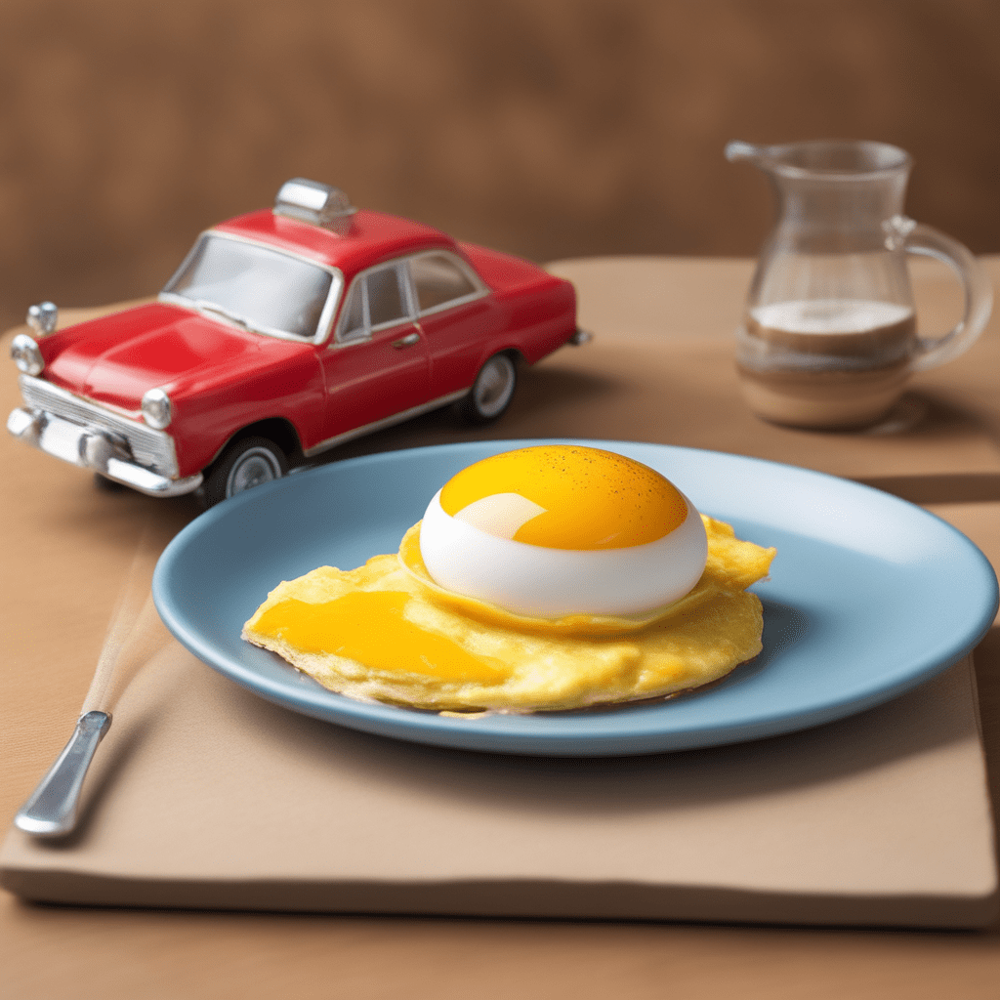

Traffic Jam Omelette

A scrambled start to the day, served with a side of excuses!
Start Your Day with a Dash of Chaos! The Traffic Jam Omelette is the perfect recipe for those who appreciate the unpredictability of life. It's a scramble of unexpected road closures, detours, and honking horns, served with a side of humorous excuses. Embrace the culinary adventure of commuting!
Ingredients:
- 1 cup of unexpected road closures
- 2 tablespoons of a surprise detour
- A pinch of "I swear, it was out of my control"
- A handful of honking horns and frustrated drivers
- A generous sprinkle of "I left early, but life had other plans"
- A dash of "Can you believe the luck I have?"
- A slice of humility
Instructions:
- Begin your excuse by mentioning the unexpected road closures as the base ingredient. Explain that you couldn't have possibly foreseen this chaos.
- Add the surprise detour for that extra twist. It's as if the universe conspired to make you late.
- Sprinkle in a pinch of "I swear, it was out of my control" to emphasize that you are a victim of unfortunate circumstances.
- Mention the honking horns and frustrated drivers to paint a vivid picture of the chaos on the road.
- Continue with a generous sprinkle of "I left early, but life had other plans." This implies that you were responsible but life had different ideas.
- A dash of "Can you believe the luck I have?" adds a touch of sarcasm to your excuse.
- Conclude with a slice of humility, acknowledging that being late is not your preference, and you appreciate the understanding of others.
Serve your "Traffic Jam Omelette" excuse with a friendly smile and a side of understanding, and you'll find that it lightens the mood when you're running behind schedule.
See more AWESOME Recipes by me...